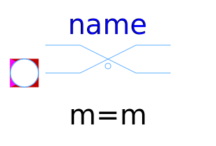

This package hosts ideal models for quasi stationary multiphase circuits. Quasi stationary theory can be found in the references.
| Name | Description |
|---|---|
| Idle branch | |
| Short cut branch | |
|
|
Multiphase ideal commuting switch |
|  IdealIntermediateSwitch | Multiphase ideal intermediate switch |
|
|
Multiphase ideal opener |
|
|
Multiphase ideal closer |